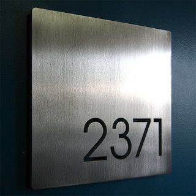
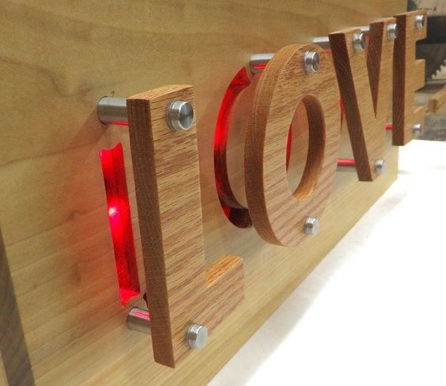
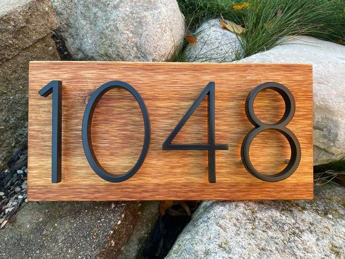
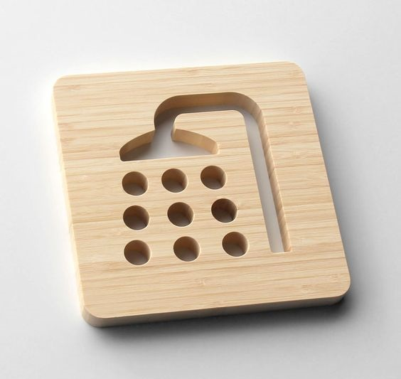
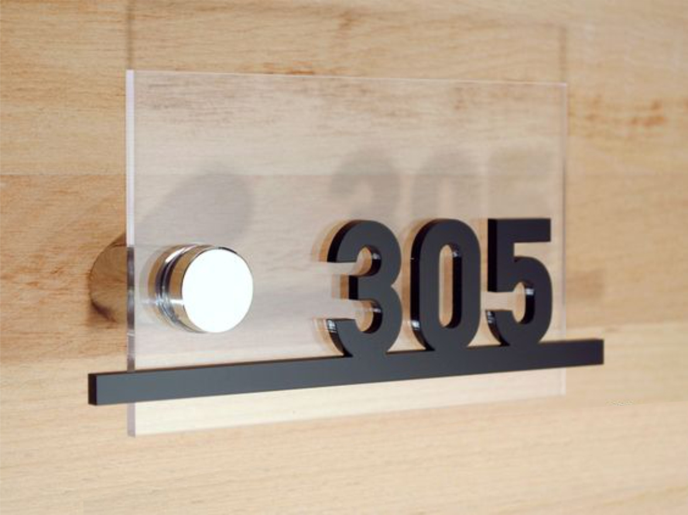
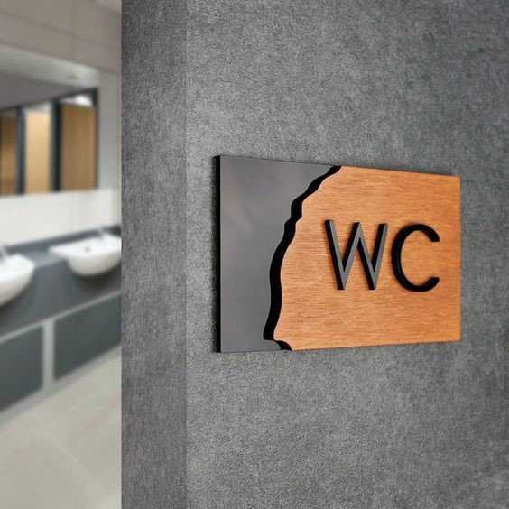
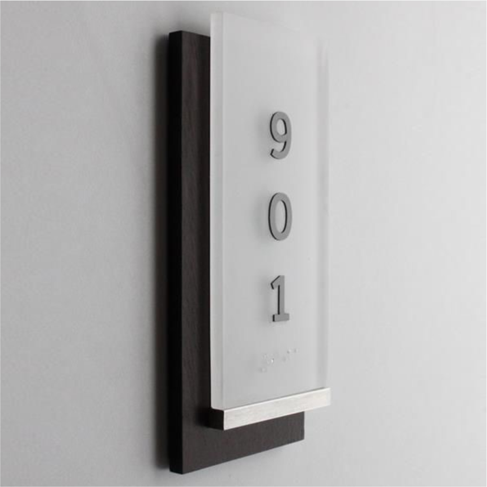

КВАРТИРНЫЕ НОМЕРКИ И ТАБЛИЧКИ
Приветствуем вас в мире превосходных номеров для квартир! Наша компания является производителем высококачественных номеров из нержавеющей стали, акрила, многослойного пластика, ПВХ и плексигласа. Мы предлагаем широкий выбор дизайнов и цветов, чтобы удовлетворить потребности любого клиента. Наши номера прекрасно смотрятся в любой обстановке и не теряют своего внешнего вида даже после длительной эксплуатации. Наша продукция – это не только функциональность, но и стиль.
Если вы хотите добавить элегантности и индивидуальности своему дому или офису, то не ищите дальше! Наши квартирные номерки и таблички - это идеальное решение для вас. Контактируйте с нами сегодня и дайте нам шанс преобразить ваш дом в место, которым вы будете гордиться!
Пластик
Квартирные номерки из двухслойного пластика.
Двухслойный пластик – удобное и практичное решение для обозначения номеров квартир в многоквартирных домах.
Они могут быть выполнены в различных размерах и формах, а современные технологии позволяют создать уникальный дизайн по индивидуальному заказу.
Одним из наиболее популярных методов является лазерная гравировка. Гравированные номерки прекрасно сохраняют свой первоначальный вид и не стираются со временем. Их можно выполнить в различных размерах и формах, а самое главное – они гарантированно будут иметь высокое качество.
Варианты нанесения информации так же позволяет выполнить очертания логотипа жилого комплекса или офиса вашей компании.
Пластик имеет толщину 1,5 или 3 мм. и состоит из двух слоев: основы черного или белого цвета и лицевого слоя которую можно выбрать из палитры цветов. Цветовая гамма пластика включает в себя как простые цвета, так и покрытия с эффектом "под металл". Таблички из металлизированных композитных пластиков практически неотличимы от металлических табличек (алюминий, латунь и т.д.), но гораздо легче и дешевле.
Квартирные номерки из двухслойного пластика – это надежное и качественное решение, которое гарантирует удобство, привлекательный внешний вид и долговечность. Эти таблички настоятельно рекомендуются для использования в многоквартирных домах, офисных зданиях и других местах, где необходимо обозначение номеров помещений.


Акрил
Однослойные и многослойные номерки и таблички.

Акрил – это прочный, устойчивый к влаге и механическим повреждениям материал, который не преломляет свет, что делает акриловые номерки яркими и очень читаемыми. Они могут иметь различные формы, размеры и цвета в зависимости от желания заказчика.
Кроме функциональных возможностей, акриловые номерки могут быть использованы для объединения и дизайнерского оформления жилых комплексов. Номера могут быть расположены на главных входных дверях, подъездных дверях или панелях управления электрическим освещением. Это делает жилой комплекс удобным для жителей и придаёт зданию современный и красивый вид.
При изготовлении акриловых номерков учитывается их долговечность и экономичность. Это один из самых долговечных материалов для номерков, так как он устойчив к ультрафиолетовому излучению и не боится атмосферных явлений. Акриловые номерки не требуют сложного ухода и могут использоваться длительное время.
Кроме того, акриловые номерки могут быть дополнены информационными табличками, которые могут содержать данные о домофонах, лифтах, сообщениях общего порядка и другой полезной информации. Это делает жизнь жителей более комфортабельной и облегчает их ориентирование в новом жилище.


Металл
Металлические таблички и номера квартир.
Важно понимать, что металлические таблички и номера квартир имеют не только эстетическую функцию, но они также могут иметь удобную форму и цвет, чтобы помочь персоналу дома и посетителям быстрее и проще найти нужную квартиру.
Для установки металлической таблички нужно выбрать материал – хорошие качественные таблички должны быть изготовлены только из надежных, прочных и долговечных материалов. Чаще всего используются металлические пластины различной толщины и размеров.
Кроме того, стоит убедиться, что таблички или номера имеют правильный размер для отображения текста. Текст должен быть написан четко и легко читаемо. Номер квартиры обычно размещается на высоте глаз, чтобы он был легко заметен любому человеку, проходящему мимо.
Другой фактор, который следует учитывать при установке таблички на квартиру, это ее дизайн. Можно добавить декоративные элементы, которые подчеркивают стиль дома или придавать им индивидуальность.
Также цвет металлической таблички должен соответствовать общему дизайну дома и легко восприниматься глазом.
Номер квартиры и таблички – важные элементы для обеспечения комфорта и удобства не только для гостей, но и для жильцов дома. Они позволяют эффективно организовывать работу обслуживающего персонала и облегчить поиск нужной квартиры для гостей. Кроме того, они являются прекрасным инструментом для создания уюта и комфорта в доме.



Дерево
Номера квартир из различных видов дерева.

Дерево - это материал, который используется для создания различных предметов интерьера. Оно натуральное, экологичное и имеет приятный внешний вид. Таблички и номера квартир из дерева - это прекрасный выбор для того, чтобы добавить в интерьер натуральность и индивидуальность.
Такие таблички могут быть выполнены в различных стилях - минималистическом, скандинавском, классическом и т.д. Они могут иметь разные размеры, формы и цвета.
Одним из главных преимуществ таких табличек является их уникальность. Каждый заказчик может заказать табличку, которая будет выполнена индивидуально по его эскизу или дизайну. Таким образом, можно создать декор элемент, который будет выглядеть уникально и оригинально.
Кроме того, таблички из дерева очень прочные и долговечные. Они не выгорают на солнце и не теряют свою форму и цвет при воздействии влаги или температурных изменений. Такие таблички могут использоваться не только в квартирах или частных домах, но и на улице, например, на дверях гаражей или входных дверях зданий.
Заказать таблички и номера квартир из дерева можно заказать в компании ПК СОЮЗ. Стоимость таких табличек зависит от их размера, формы, сложности дизайна и материала. В целом, цены варьируются от нескольких сотен до нескольких тысяч рублей.


Стекло
Номера квартир и табличек из стекла и комбинаций со стеклом.
Стекло - это материал, который мы используем везде: в окнах, дверях, зеркалах, мобильных устройствах и т.д. Однако стекло также может использоваться для создания эффектных исполнений деталей интерьера, которые станут настоящей визитной карточкой компании и дополнят ее бренд-имидж. Одним из примеров использования стекла в интерьере являются таблички и навигация из стекла. Стоит отметить, что такие элементы, в отличие от твердых пластиков, стали удачным решением для ограничения контактных поверхностей и легко моются.
Одним из преимуществ использования стекла в таких деталях является его прочность. Стекло прочнее, чем большинство материалов, и является прекрасным выбором для придания табличкам и навигации износостойкой и долговечной защиты от рисок, сколов и прочих механических повреждений. Более того, стекло не выгорает и не блекнет на солнце, поэтому его можно использовать для создания табличек, выставленных на открытом воздухе.
Важно отметить, что такие изделия могут быть установлены в любых помещениях, главное - правильно взвесить и подобрать крепеж и установить правильность расположения на стене.
Выводя наружу визитку своей компании, создавая функциональную навигацию, привлекая внимание клиентов, эти элементы несомненно помогают привнести в оформление интерьера оригинальность и стиль. Таблички и навигационные элементы из стекла – это красивое, модное и эффективное решение для медучреждений, коворкингов, бизнес-центров, музеев и других учреждений, где предъявляются высокие стандарты и требования к материалам.


Комбинированные
Таблички и номера выполненные из различных материалов.
Уникальность таких табличек и номерков заключается в том, что они могут быть выполнены из различных материалов – пластика, металла, стекла, дерева и других. Это позволяет подобрать свой вариант дизайна для каждого заказчика и для каждой ситуации. Все зависит от ваших пожеланий и целей. К примеру, если вам нужна табличка для повышения осведомленности сотрудников в офисе, то можно остановиться на варианте, изготовленном из металла. Такая табличка будет надежной и крепкой, что необходимо в случае, если ее вешать над рабочим местом. Если же вам нужны номерки для гостиницы, то здесь можно использовать материалы более нежные на ощупь и легкие – например, пластик и искуственный камень. Такие номерки будут легкими и привлекательными, но при этом ненавязчивыми. Или же если вы хотите добавить особый шик и окунуть свой интерьер в атмосферу роскоши, то это возможно с помощью номерков из стекла, металла и натурального камня.
Однако, важно понимать, что такие таблички и номерки – это не только красивый дизайн, но и практичность использования на практике. Комбинированные таблички и номерки могут быть снабжены разнообразными элементами – от светодиодной подсветки до индикаторов направления. Эти элементы позволяют легко ориентироваться в здании даже в условиях недостаточного освещения.

